구로구 유품정리
가족의 마음으로 정리합니다
아파트와 다세대주택, 상가형 공간이 함께 있어 물품 양과 폐기물 양에 따라 작업 인원이 달라질 수 있습니다. 현장 상황에 맞춰 유품 분류와 중요 물품 확인, 폐기물 정리, 공간 정돈까지 안내드립니다.
구로·금천·양천 인접 지역과 함께 상담되는 경우가 있어 일정 조율을 유연하게 안내합니다.
서류, 통장, 도장, 사진, 귀중품 등 확인이 필요한 물품을 별도로 분류합니다.
생활폐기물과 가구, 잔짐까지 함께 상담 가능합니다.
구로구 유품정리 서비스
현장 상황에 따라 유품정리, 고독사청소, 특수청소, 폐기물처리를 함께 안내합니다.
유품정리
남겨진 생활용품과 의류, 서류, 사진, 귀중품을 가족과 협의하며 분류합니다.
고독사청소
오염과 악취가 있는 공간은 일반 정리와 별도로 특수청소 필요 여부를 확인합니다.
특수청소
장기간 방치, 오염, 악취 등 일반 정리로 어려운 현장을 확인 후 안내합니다.
폐기물처리
가구, 가전, 생활폐기물, 잔짐 등 현장에서 발생한 폐기물 처리를 상담합니다.
구로구 유품정리 비용 안내
표시 금액은 기본 안내 금액이며 정확한 비용은 현장 확인 후 작업 범위에 따라 안내드립니다.
중요 물품 확인, 생활용품 분류, 폐기물 분류, 공간 정리 상담
오염 범위 확인, 악취·위생 문제, 특수청소 필요 여부에 따라 안내
1톤 1대 기준. 폐기물 양, 운반 거리, 층수에 따라 변동 가능
구로구 현장에서 비용이 달라지는 이유
구로·금천·양천 인접 지역과 함께 상담되는 경우가 있어 일정 조율을 유연하게 안내합니다.
물품 양
보관품과 폐기품의 양이 많을수록 작업 시간과 인력이 달라집니다.
층수와 동선
엘리베이터 여부, 주차 위치, 운반 동선에 따라 작업 난이도가 달라집니다.
폐기물 양
가구, 가전, 생활폐기물의 양과 종류에 따라 처리 비용이 달라질 수 있습니다.
특수청소 여부
오염, 악취, 장기간 방치가 있는 경우 추가 작업이 필요할 수 있습니다.
작업 인원
공간 규모와 희망 일정에 따라 투입 인원과 차량 수가 달라질 수 있습니다.
일정 조율
당일 상담이나 급한 일정은 현장 위치와 예약 상황에 따라 안내드립니다.
구로구 유품정리 진행 과정
상담부터 마무리 확인까지 가족과 협의하며 단계별로 진행합니다.
상담 접수
주소, 공간 형태, 정리 범위, 희망 일정을 확인합니다.
현장 확인
물품 양, 층수, 엘리베이터 여부를 확인합니다.
중요품 분류
서류, 통장, 사진, 귀중품 등을 분류합니다.
유품정리
보관품, 확인품, 폐기품을 구분합니다.
마무리 확인
정리 후 공간 상태를 확인합니다.
구로구 유품정리 작업후기
구로구 현장은 보관품과 폐기품이 섞여 있어 분류 과정이 중요했습니다. 통장, 도장, 사진, 계약서 등 확인이 필요한 물품을 먼저 구분하고 생활폐기물은 별도로 정리해 반출 계획을 세웠습니다.
작업 전
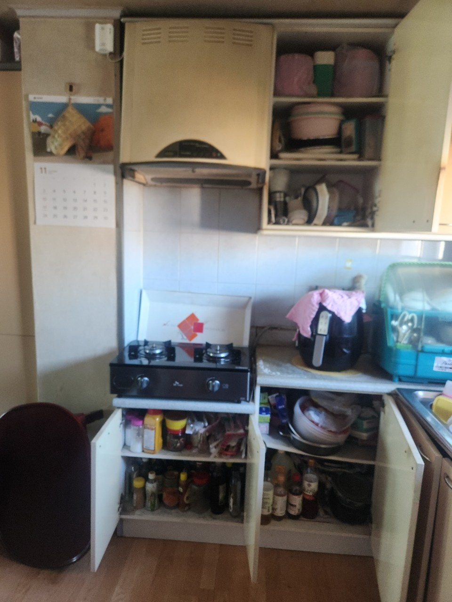
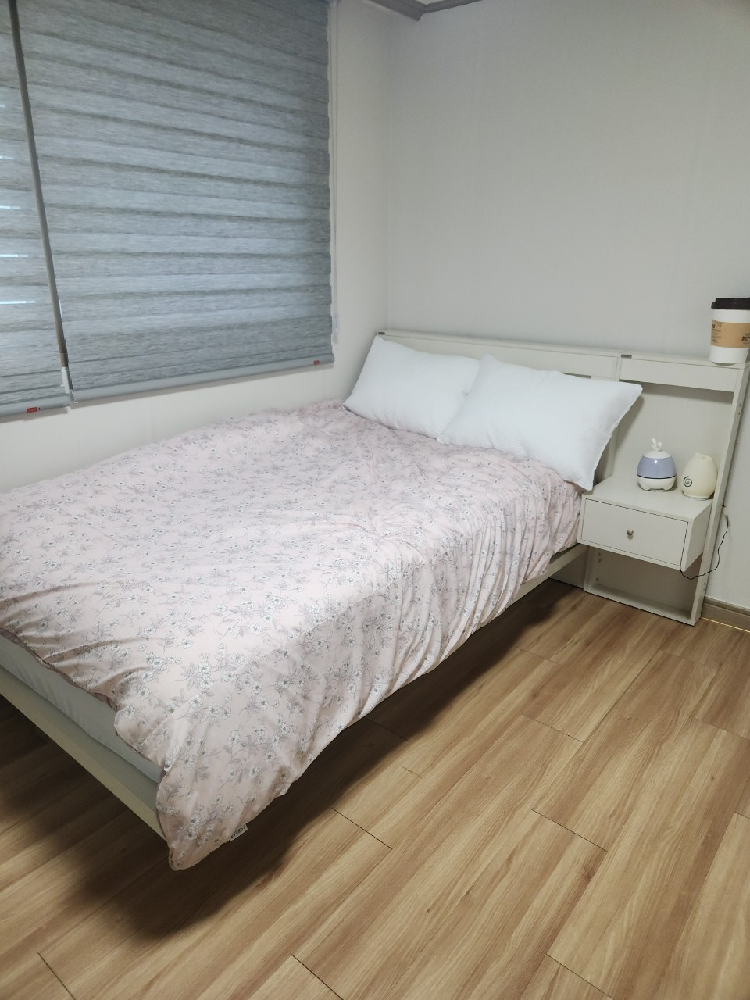
작업 후
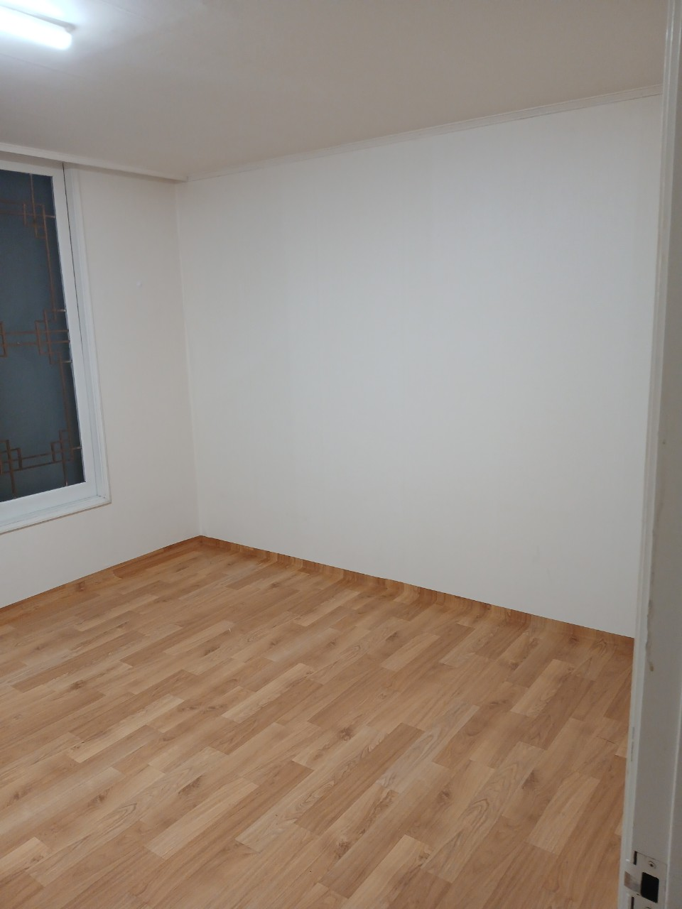
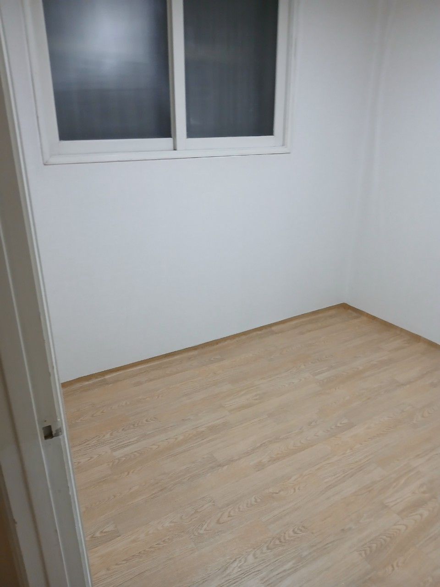
구로구 유품정리 작업 사진
작업 전·중·후 사진을 구분해 현장 정리 흐름을 확인할 수 있도록 구성했습니다.
작업 전
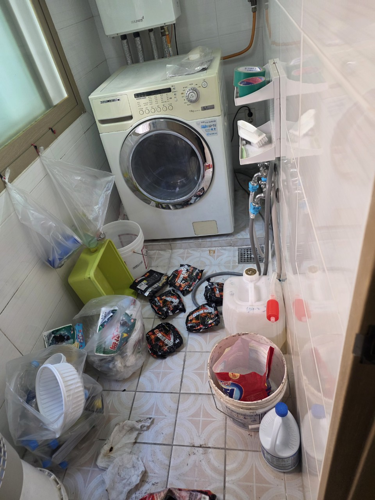
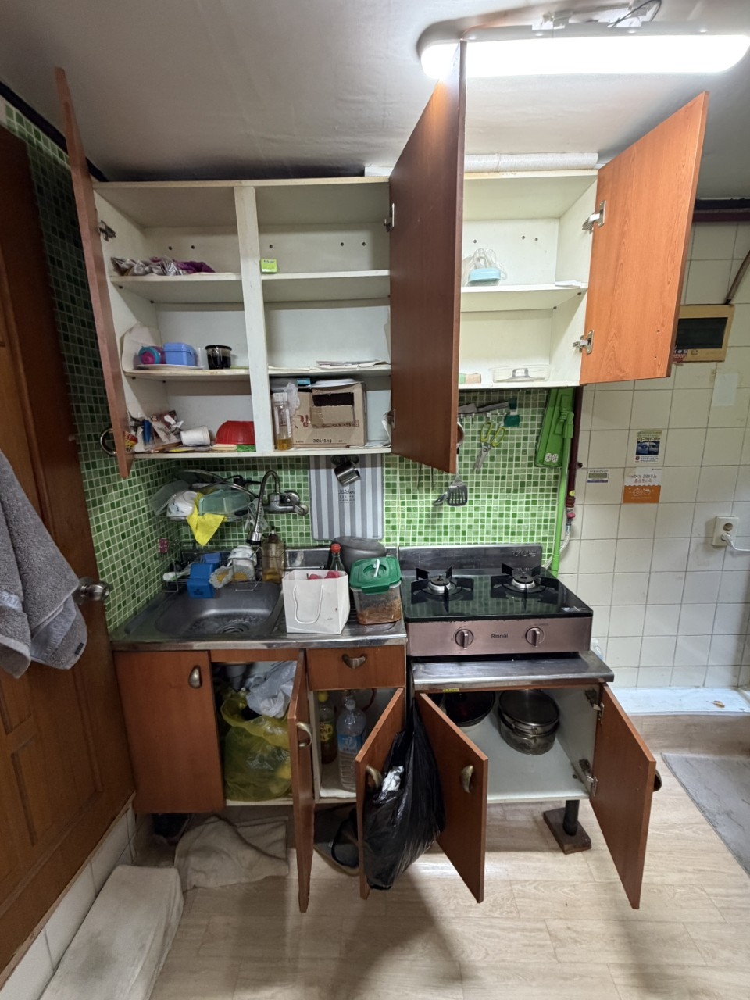

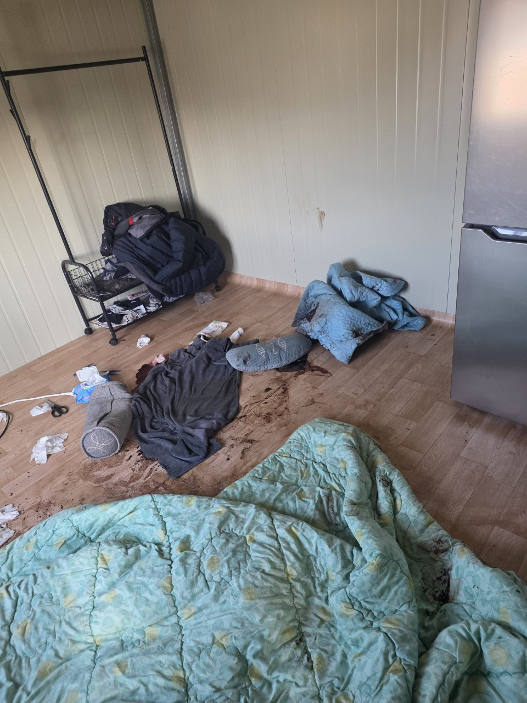
작업 중
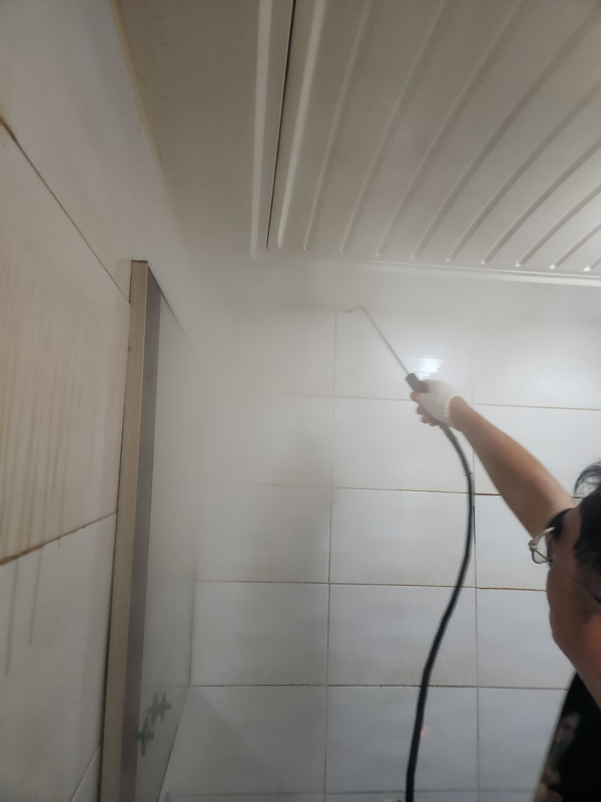

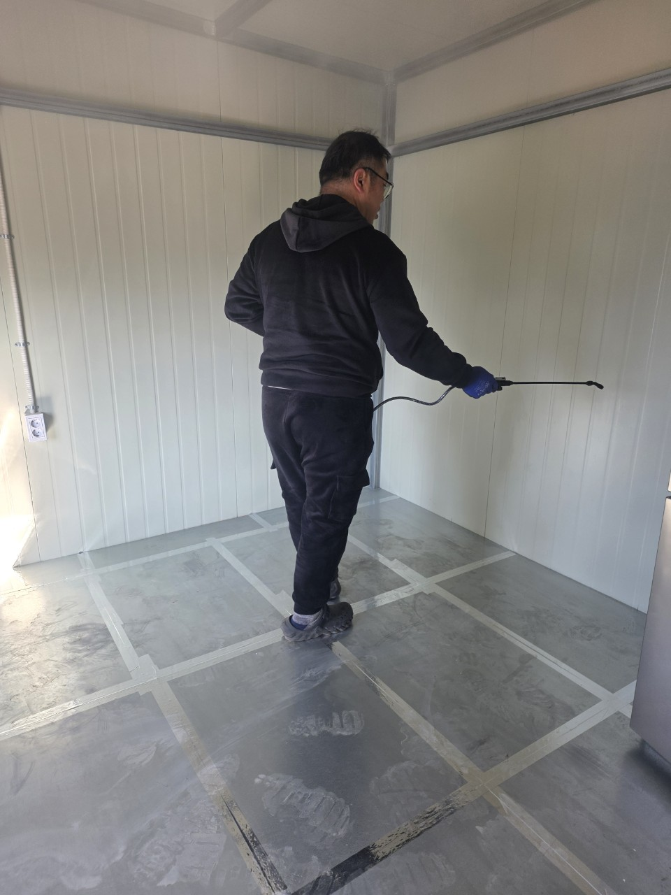
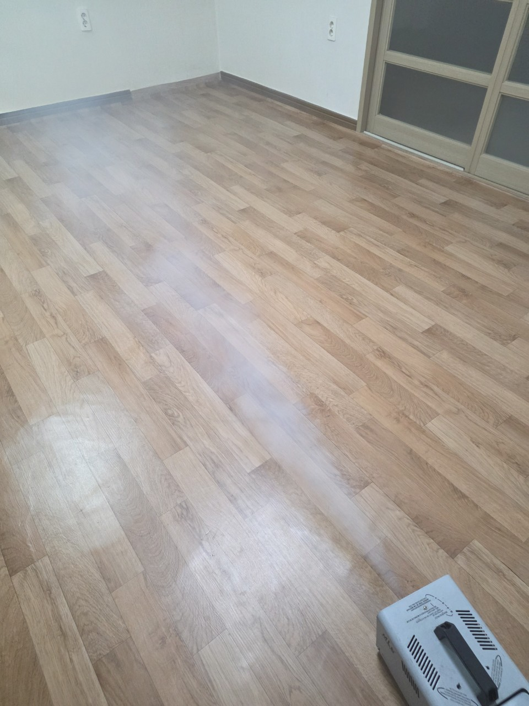
작업 후
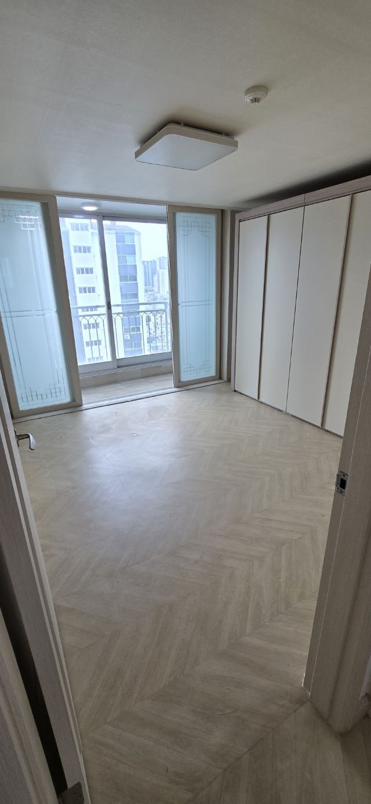
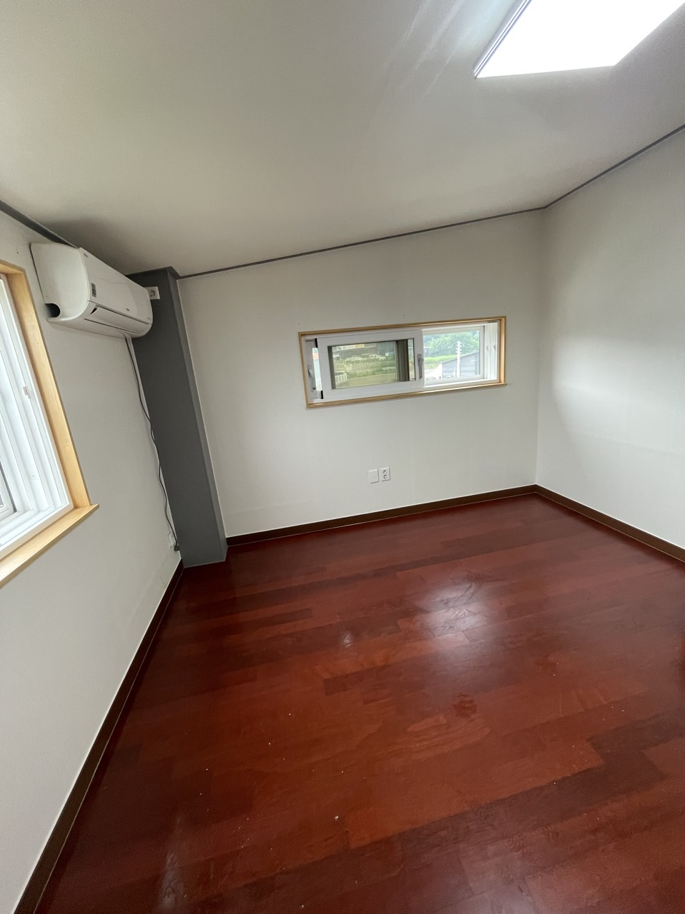
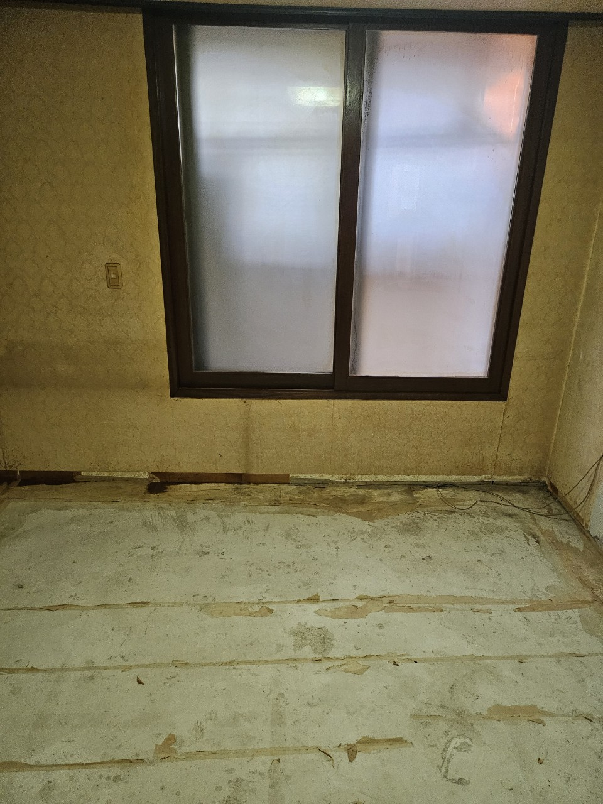

구로구 유품정리 자주 묻는 질문
구로구 고독사청소도 함께 가능한가요?
가능합니다. 오염 범위와 악취, 소독 및 특수청소 필요 여부를 확인한 뒤 안내드립니다.
폐기물처리도 같이 신청할 수 있나요?
가능합니다. 유품정리 과정에서 발생하는 생활폐기물과 가구, 잔짐까지 함께 상담 가능합니다.
가족이 현장에 꼭 있어야 하나요?
중요 물품 기준을 정하기 위해 초기 상담 단계에서는 가족분과 협의하는 것이 좋습니다.
귀중품이나 서류는 어떻게 확인하나요?
통장, 도장, 계약서, 사진, 귀금속 등은 별도로 확인해 가족분께 안내드립니다.
구로구 유품정리 상담접수
구로구 현장 상황과 주소를 남겨주시면 방문 가능 일정과 정리 범위를 확인해 안내드립니다.
가족의 마음으로 조심스럽게 정리하겠습니다
유품정리 · 고독사청소 · 특수청소 · 폐기물처리 상담